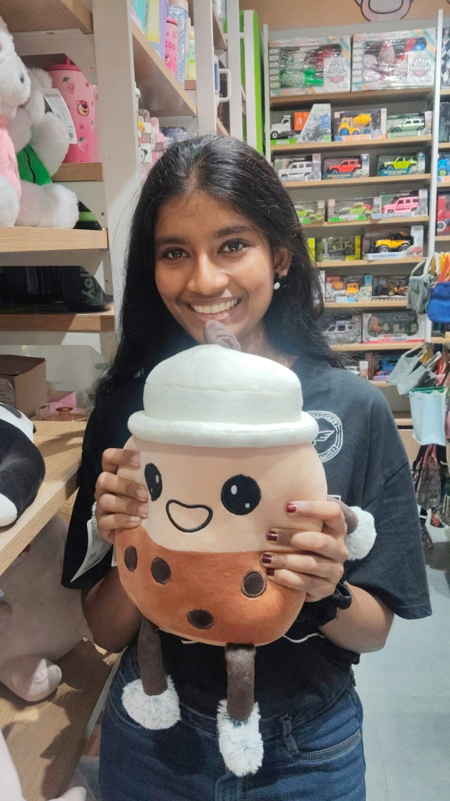

Hello, this is
Aspiring Cloud & Software Engineer

I am a second-year Computer Science and Engineering student who thrives on gaining knowledge across a variety of fields. I consider myself a curiosity-driven learner; I don't just want to know how something works, I want to master the core concepts and fundamentals behind it. Whenever a topic piques my interest, I dive into it immediately. This mindset led me to the world of AWS and Cloud Computing. Having already built a solid foundation in the fundamentals, I am now focused on deepening my understanding and applying what I’ve learned to build innovative and interesting projects.
Outside of my studies, I am a passionate guitarist. I love the process of learning new songs and the creative discipline it requires. When I’m not playing music, I’m usually reading books. Whether it’s fiction or non-fiction, I enjoy exploring new ideas and perspectives that keep my curiosity alive outside of the tech world.
Built a machine learning based computer vision system to detect and classify garbage using image data. Focused on preprocessing, model training, and evaluating detection accuracy for real-world waste management scenarios.
Designed and developed a responsive personal portfolio using HTML, CSS, and JavaScript. Planned deployment using Amazon S3 for static website hosting and CloudFront for global content delivery.
Streamed and visualized battery dataset metrics using Databricks with Apache Spark. Integrated Apache Flink in a separate virtual environment to explore real-time data processing concepts and streaming workflows.
St.Joseph's Institute of Technology